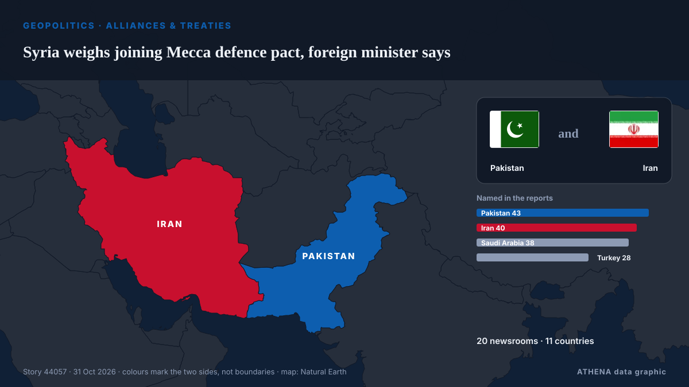

Bündnisse und Verträge
| 18. Okt. | 0 |
|---|---|
| 19. Okt. | 0 |
| 20. Okt. | 0 |
| 21. Okt. | 1 |
| 22. Okt. | 0 |
| 23. Okt. | 0 |
| 24. Okt. | 0 |
| 25. Okt. | 0 |
| 26. Okt. | 1 |
| 27. Okt. | 2 |
| 28. Okt. | 2 |
| 29. Okt. | 3 |
| 30. Okt. | 1 |
| 31. Okt. | 1 |
Schlagzeilen werden auf Englisch angezeigt, wie veröffentlicht.

Syria weighs joining Mecca defence pact, foreign minister says
Opposition Republican People’s Party (CHP) leader Kemal Kılıçdaroğlu has stated his party will vote in favor of a defense agreement between Türkiye, Pakistan and Saudi Arabia when it comes before… von Hürriyet Daily News
CSA does not bind parties' political positions, says Adam Adli
MELAKA: The Confidence and Supply Agreement (CSA) signed yesterday between the federal government, Bersatu, and independent members of parliament does not bind any party's political stance or… von New Straits Times
Kremlin urges against seeing Kallas’s remarks as signal
The EU foreign policy chief earlier said European leaders were finding it harder to persuade their populations to support Kiev because everyone is tired of the Ukraine conflict. von TASS (English)
Germany news: Merz in Asia warns against weaponizing trade
German diplomacy in Asia takes focus this week, as Chancellor Merz wraps up a three-country Asian business tour in South Korea. von DW English
We do not see our return to CSTO says Armenia's Mirzoyan
Armenia has ruled out resuming its participation in the Collective Security Treaty Organization (CSTO), reaffirming that its membership remains frozen and that Yerevan has no intention of reversing… von AzerNews
Oman calls for economic and security pact between Iran and Gulf countries
Oman's Foreign Minister Badr Al Busaidi has called for a peace agreement between the Arab Gulf states and Iran, which would see the countries collaborating on security and the regional economy. von The National